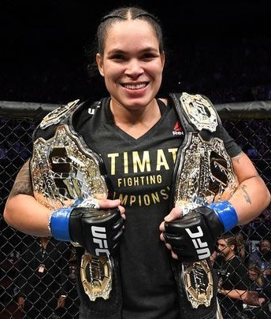
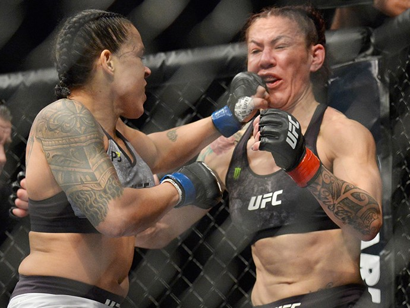

Amanda Nunes: "Champ Champ"
The First Female to Hold Two MMA Titles
Amanda Nunes is widely considered the best female MMA fighter of all time but I argue she needs no "female" qualifier and is in fact the best. She is the first female to hold two UFC division titles: Women's Featherweight and Bantamweight. She is also the only fighter, male or female, to actively hold and defend two titles, all while being the only openly gay champion in UFC history.
Fight History
In December 2018, Nunes dethroned reigning bantamweight champ Chris Cyborg after she'd gone 22 bouts undefeated. Also known as "The Lioness," Nunes was considered a major underdog in the fight. She held the title of featherweight champion, but to fight Cyborg she had to bulk up to the next weight class, bantamweight. Despite the heavily stacked odds, Nunes came in hot and fast and defeated Cyborg in 51 seconds with a TKO, stunning audiences worldwide.
In 2020, Nunes defended her bantamweight title two more times. First against Holly Holm and then Germaine de Randamie. In December 2020, Nunes is expected to fight Meghan Anderson. We'll all be watching closely with anticipation to see if The Lioness can once again defend her title.
 I knew I just needed to get that front leg out. Cyborg puts all her weight on her front leg, so as soon as I took it out, everything opened up to me.Nunes explained after her decisive win against Chris Cyborg in UFC 232.